影石 Insta360 自行车码表支架
参数 · 适配 · 安装教程 · 搭配不同相机使用指南（官方资料整理）
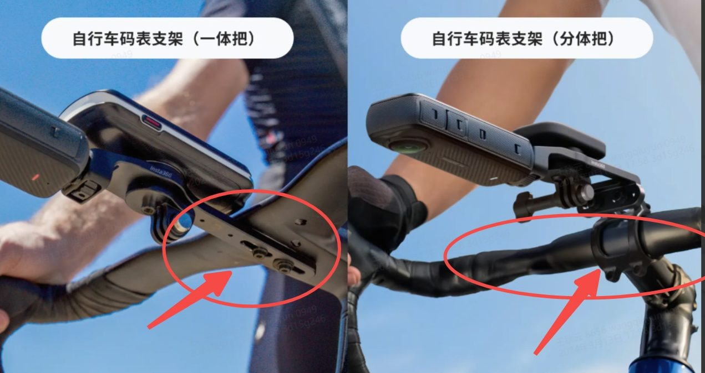
自行车码表支架（一体把）与（分体把）实际安装效果对比
一、产品概述
自行车码表支架是影石 Insta360 专为自行车骑行场景打造的多功能支架配件。通过航空级铝合金材质与 1/4" 通用接口 + 三爪接口 + 码表底座的组合设计，可同时安装全景相机/运动相机、车灯和自行车码表，让车把简洁有序，实现沉浸式骑行记录。
三合一设计
航空级铝合金
1/4" + 三爪双接口
适配主流码表
二、版本对比
| 对比项 | 自行车码表支架（一体把） | 自行车码表支架（分体把） |
|---|
| 官方售价 | ¥229 | ¥229 |
| 上市时间 | 2024年9月13日 | 2024年9月13日 |
| 适用车把类型 | 一体把（纵置双孔） | 分体把 |
| 螺孔要求 | M4 或 M5，中心间距 9–55 mm | M5，中心间距 11–39 mm |
| 产品尺寸 | 187 × 39 × 33 mm | 115 × 53 × 28.5 mm |
| 重量 | 约 106 g | 约 120 g |
| 最大承重 | 约 500 g | 约 500 g |
| 材质 | 航空铝合金 AL7075-T6、塑胶、不锈钢 |
| 接口 | 1/4" 通用接口 + 三爪接口 + 码表底座 |
| 外接自拍杆 | 不支持（仅可直连相机） |
| 码表座螺丝 | 直径 3 mm，长度 6 mm |
| 三爪螺丝 | 直径 5 mm，长度 10 mm |
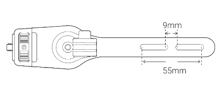
一体把支架：螺孔间距 9–55 mm
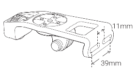
分体把支架：螺孔间距 11–39 mm
三、详细参数
| 参数类型 | 参数项 | 一体把 | 分体把 |
|---|
| 硬件 | 尺寸（宽 × 高 × 厚） | 187 × 39 × 33 mm | 115 × 53 × 28.5 mm |
| 重量 | 约 106 g | 约 120 g |
| 最大承重 | 约 500 g |
| 材质 | 主体材质 | 航空铝合金 AL7075-T6 |
| 其他材质 | 塑胶、不锈钢 |
| 接口 | 通用接口 | 1/4" 英寸螺丝接口 |
| 快拆接口 | 三爪接口 |
| 码表底座 | Garmin / Wahoo / Bryton / Giant 四款可选 |
| 配件 | 螺栓规格 | M4 / M5（18 mm） | 长螺栓 40 mm / 短螺栓 30 mm |
| 锁紧力度建议 | 5 N·m（或遵循车把自带推荐值） |
四、适配详情
4.1 自行车适配性
| 版本 | 适配条件 | 完全适配示例 | 不适配示例 |
|---|
| 一体把 |
车把底部预留纵置双孔；螺孔 M4/M5；中心间距 9–55 mm（按螺帽外径 ≤60 mm） |
Bigrock 天际线、TFSA 2023 |
Farsports F1S、Canyon GEAR GROOVE CP0047、Trek Madone SLR Gen 7 Barstem、Toseek TR5500、Vision METRON 5D |
| 分体把 |
把立上有标准紧固螺丝孔位；螺孔 M5；中心间距 11–39 mm（按螺帽外径 ≤60 mm） |
VOOK ONE、迪卡侬 EXPL50 |
暂无信息 |
⚠️ 安装前必读：
• 请确保车把上有 2 个螺栓且间距满足要求。如车把上仅有 1 个螺栓，或螺丝间距不满足安装需求时，请勿使用本配件。
• 一体把版本仅支持纵置双孔的一体自行车把安装。
4.2 相机兼容性
| 相机型号 | 一体把 | 分体把 |
|---|
| X5、X4 Air、X4、X3、X2、ONE X | 支持 | 支持 |
| Ace Pro 2、Ace Pro、Ace | 支持 | 支持 |
| GO Ultra、GO 3S、GO 3 | 支持 | 支持 |
| ONE RS（双镜头/4K）、GO 2、ONE R | 支持 | 支持 |
4.3 码表兼容性
| 码表品牌 | 一体把 | 分体把 |
|---|
| Garmin（佳明） | 支持 | 支持 |
| Wahoo | 支持 | 支持 |
| Bryton（百锐腾） | 支持 | 支持 |
| Giant（捷安特） | 支持 | 支持 |
提示：自行车码表支架随附以上 4 款品牌的码表座。如果您使用其他品牌的码表，建议您自备相应的码表座以确保兼容性。
五、包装清单
5.1 一体把版本
- 1 × 支架本体
- 1 × 锁紧螺杆
- 2 × 18 mm M5 螺栓
- 2 × 18 mm M4 螺栓
- 4 × 防松垫片
- 1 × 4 mm L 型扳手
- 1 × 2 mm L 型扳手
- 1 × 码表座 – Garmin 款
- 1 × 码表座 – Wahoo 款
- 1 × 码表座 – Bryton 款
- 1 × 码表座 – Giant 款
- 2 × 码表座螺丝
5.2 分体把版本
- 1 × 支架本体
- 1 × 锁紧螺杆
- 2 × 长螺栓（40 mm）
- 2 × 短螺栓（30 mm）
- 2 × 长螺柱
- 2 × 短螺柱
- 4 × 防松垫片
- 1 × 4 mm L 型扳手
- 1 × 2 mm L 型扳手
- 1 × 码表座 – Garmin 款
- 1 × 码表座 – Wahoo 款
- 1 × 码表座 – Bryton 款
- 1 × 码表座 – Giant 款
- 2 × 码表座螺丝
六、搭配不同影石相机的使用教程
6.1 全景相机 X 系列（X5 / X4 Air / X4 / X3 / X2 / ONE X）
推荐接口：三爪接口（全景相机标配三爪底座）或 1/4" 接口（配合转接头）
安装方式：
- 将全景相机的标准三爪底座对准支架的三爪接口插入。
- 用锁紧螺杆穿过三爪接口底座，旋紧固定相机。
- 重要（X3 除外）：连接 X 系列相机时，强烈建议先用绑带将相机固定至支撑板，再安装至码表支架。此时请保持相机屏幕朝上，避免损坏。
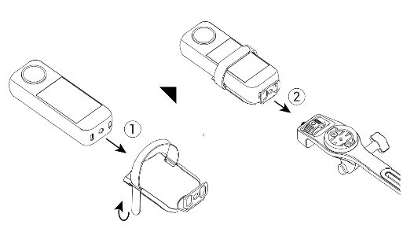
X 系列相机（X3 除外）建议先用绑带固定至支撑板
拍摄建议：
- 全景模式下使用 8K 30fps 或 5.7K 60fps 录制，后期可在 Insta360 APP 中自由选取任意视角。
- 车把机位可获得「第一人称沉浸式视角」，也能通过后期裁切获得「第三人称跟拍视角」。
- 建议开启 FlowState 防抖，在颠簸路面也能获得稳定画面。
- 如配合 114cm / 85cm 隐形自拍杆，可进一步扩展拍摄角度（注意：码表支架本身不可外接自拍杆）。
6.2 Ace 系列（Ace Pro 2 / Ace Pro / Ace）
推荐接口：1/4" 螺丝接口 或 三爪接口（配合 1/4" 转三爪转接头）
安装方式：
- 将 Ace 系列相机底部的 1/4" 螺孔对准支架的 1/4" 螺丝接口。
- 顺时针旋转相机至稳固，建议使用扳手辅助锁紧。
- 如使用三爪接口，请先安装 1/4" 转三爪转接头，再安装相机。
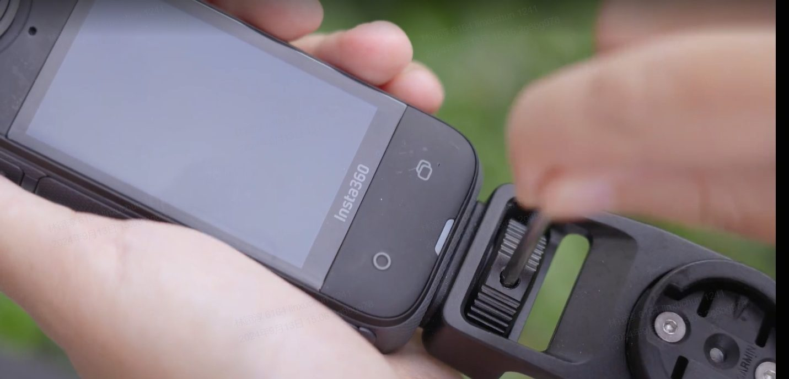
Ace 系列相机通过 1/4" 接口安装至码表支架
拍摄建议：
- Ace Pro 2 支持 8K 视频录制，搭配码表支架可获得超清骑行画面。
- 利用 Ace 系列的 运动 HDR 模式，在明暗对比强烈的场景（如树荫下骑行）保留更多细节。
- Ace 系列为单镜头广角相机，建议将镜头朝前对准骑行方向，获得最自然的 POV 视角。
6.3 GO 系列（GO Ultra / GO 3S / GO 3）
推荐接口：三爪接口（GO 系列标配磁吸快拆/三爪转接配件）
安装方式：
- GO 系列相机自带磁吸快拆底座，通过标准三爪转接头可安装至码表支架的三爪接口。
- 将转接头插入三爪接口，用锁紧螺杆固定。
- 如安装后有松动，可在接口处贴上防松垫片加固。
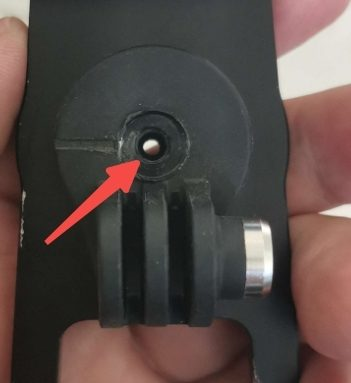
三爪接口安装特写（带防松垫片加固示意）
拍摄建议：
- GO Ultra / GO 3S 体积小巧，安装在码表支架上几乎不占空间，适合轻量化骑行。
- 建议开启 FlowState 防抖 或 360° 水平校正，确保画面始终水平。
- GO 系列支持「拇指相机」模式，可轻松实现第一人称视角录制。
6.4 ONE RS / GO 2 / ONE R
推荐接口：三爪接口（配合 ONE RS 标准保护框/三爪底座）
安装方式：将 ONE RS 标准保护框的三爪底座插入码表支架的三爪接口，旋紧锁紧螺杆即可。
注意：ONE RS 一英寸全景版体积和重量较大，请确认总重量不超过 500 g 承重上限。
6.5 支架接口详解
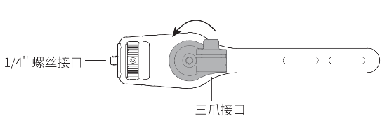
支架提供 1/4" 螺丝接口与三爪接口
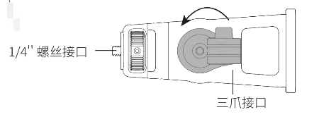
拧松三爪接口底座螺丝后可调整相机角度
七、安装教程
7.1 自行车码表支架（一体把）安装步骤
步骤 1：安装码表座
- 根据您的码表型号选择相应的码表座（Garmin / Wahoo / Bryton / Giant）。
识别方法：Garmin 底座有 "GM" 标识；Wahoo 有 "wh"；Bryton 有 "b"；Giant 无标识。
- 将码表座安装在支架上，用 2 mm L 型扳手拧紧螺丝。
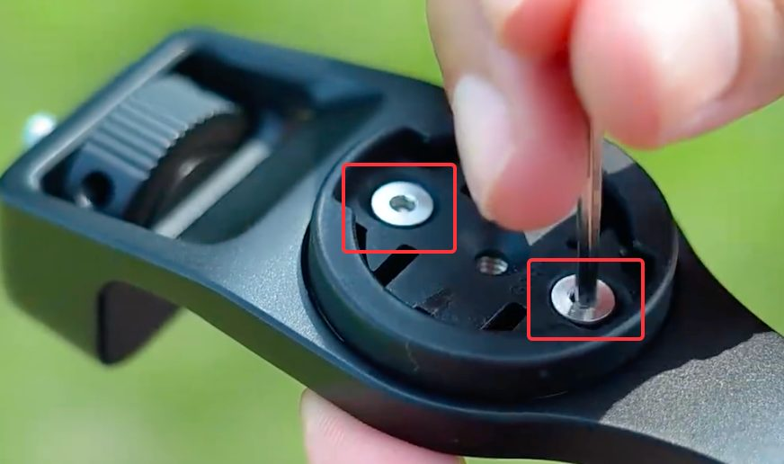
码表座螺丝安装实拍
温馨提示：码表座可安装方向有 2 种，您可按需安装。随附有 4 款码表座，适配多款码表。
步骤 2：安装支架至车把
- 根据自行车车头的螺丝孔大小选择 M4 或 M5 螺栓。
- 将支架对准车把底的螺丝孔，安装至自行车车头。
- 用 4 mm L 型扳手拧紧螺栓。建议锁紧力度 5 N·m，或遵循车把自带推荐值。
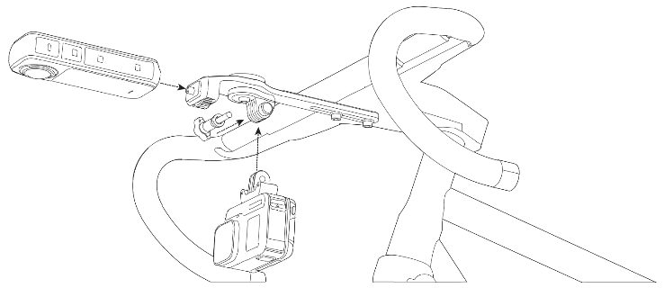
一体把支架整体安装效果示意图
温馨提示：支架螺丝孔间距为 9 mm 至 55 mm，您可依据码表尺寸调节支架在车把上安装的前后位置。
步骤 3：安装相机或配件
- 1/4" 螺丝接口：建议安装时使用扳手辅助锁紧。
- 三爪接口：如安装至三爪接口后有松动，可在接口处贴上防松垫片加固。拧松三爪接口底座上的螺丝后，可调整其角度。
步骤 4：安装码表
将码表对准码表座卡入即可。码表座到支架末端的距离约 122.5 mm。
一体把安装视频
自行车码表支架（一体把）官方安装视频教程
7.2 自行车码表支架（分体把）安装步骤
步骤 1：安装码表座
- 根据您的码表型号选择相应的码表座。
- 将码表座安装在支架上，用 2 mm L 型扳手拧紧螺丝。
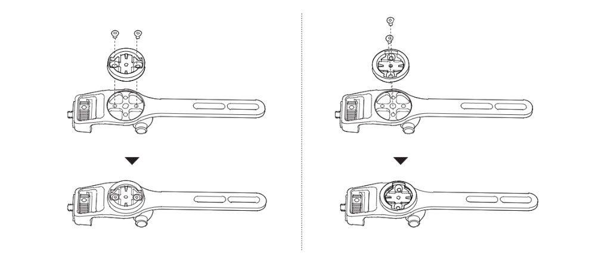
码表座可前后两种方向安装
步骤 2：安装支架至车把
- 支架可选择安装在自行车车头的上侧或下侧。请您根据需要先移除车头上自带的一对螺栓（上侧或下侧）。
- 依据螺丝孔长度选择长螺栓或短螺栓，并适配长螺柱或短螺柱，使螺柱完全拧入螺丝孔。
若不确定使用哪种螺栓，请优先尝试 40 mm 长螺栓；如长螺栓无法适配，再换成 30 mm 短螺栓。
- 注意螺柱的安装方向，使螺栓从螺柱帽一端装入。
- 将支架安装至自行车车头，用 4 mm L 型扳手拧紧螺栓。建议锁紧力度 5 N·m。
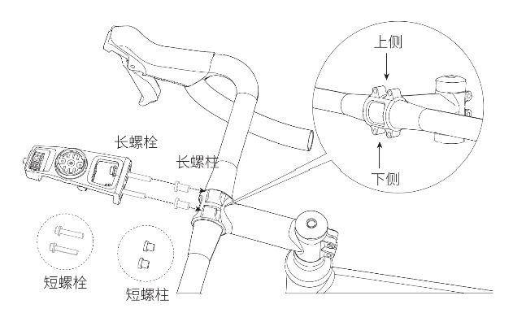
长螺栓/短螺栓 + 长螺柱/短螺柱的选择
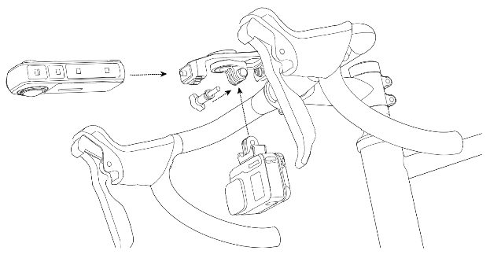
支架可安装于车把上侧或下侧
温馨提示：支架螺丝孔间距为 11 mm 至 39 mm。请确保 2 个螺栓均已锁紧支架。
步骤 3：安装相机或配件
与一体把相同：使用 1/4" 螺丝接口或三爪接口安装相机。
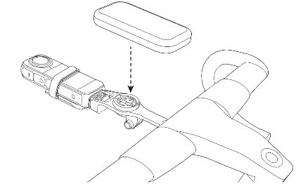
分体把支架整体安装效果示意图
步骤 4：安装码表
将码表对准码表座卡入即可。码表座到支架末端的距离约 60 mm。
分体把安装视频
自行车码表支架（分体把）官方安装视频教程
八、注意事项
- 不可在支架上外接自拍杆，只能直连相机。
- 在支架上安装设备时，最大载重为 500 克，请勿超出此重量。
- 骑行前，需检查并确认所有螺丝、螺栓以及相机等均已锁紧，以防跌落。
- 建议在平坦路况骑行时使用，骑行速度不超过 60 km/h；不建议在山路等颠簸路况骑行时使用。
- 请严格按照说明安装和使用配件，切勿自行 DIY。未按说明要求使用而导致的故障或损坏，不在影石 Insta360 保修、更换服务内。
九、常见问题（FAQ）
Q1：自行车码表支架一体把和分体把的区别是什么？
一体把和分体把分别适用于不同车把类型的自行车。一体把版本针对车把底部预留螺孔的一体把设计；分体把版本针对把立上有标准紧固螺丝孔位的分体把设计。
Q2：如何区分自行车码表支架上的四个不同品牌的码表座？
您可以通过观察底座上的标识来判断：
• Garmin：底座上有 "GM" 标识
• Wahoo：底座上有 "wh" 标识
• Bryton：底座上有 "b" 标识
• Giant：底座上没有标识
Q3：如果拧紧后相机是歪的怎么办？
请您一只手将相机手持扶正，另一只手使用 L 型扳手拨入调节旋钮拧紧即可。
Q4：长螺栓和短螺栓的长度分别是多少？以及如何选择？
分体把配有 30 mm 和 40 mm 两种长度的螺栓供您选用。在选择螺栓时，建议您根据自行车孔的深度进行判断。若无法确认孔深度，出于安全考虑，建议您优先使用 40 mm 的长螺栓，以确保更稳固的安装。如长螺栓不适合，再尝试使用 30 mm 的短螺栓。
Q5：码表支架的码表盘到末端的距离是多少？
• 分体把码表支架：约 60 mm
• 一体把码表支架：约 122.5 mm
Q6：自行车码表支架（一体把）的宽度是多少？
如图所示，此宽度约 17 mm。
Q7：自行车码表支架的盘齿三爪螺丝尺寸是多少？
直径为 5 mm，长度为 10 mm。
Q8：码表支架中的码表座螺丝的尺寸是多少？
直径为 3 mm，长度为 6 mm。
十、产品卖点速览
- 全新第三人称车把机位 — 搭配全景相机，拍摄速度感十足的骑行画面。
- 安装方式更简洁 — 相机、码表、车灯三合一，一个支架解决所有设备安装，还你纯净车把。
- 高强度航空级材料 — 航空级铝合金 AL7075-T6 打造，安装更安全、更稳固。
- 兼容更广 — 可按需选购支持一体把或分体把的版本，适配不同车把结构。
- 双接口设计 — 1/4" 通用接口 + 三爪接口，兼容全景相机、运动相机、车灯等配件。
- 主流码表全适配 — 随附 Garmin、Wahoo、Bryton、Giant 四款码表座。
资料来源：影石 Insta360 官方商城、官方在线手册、官方安装视频教程。
整理日期：2026年8月14日。本手册仅供个人参考，具体参数以官方最新发布为准。